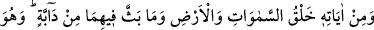
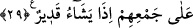

haramîler tarafından basılıp yağma edildi. Ben duruma hiç mukâvemet göstermedim.
Kendi isteğimle bir don ve gömlek hâriç her şeyi çıkarıp koydum. Ön tarafa doğru
yürüyüp ilerledim. İçimden bir ses bana sağ tarafa gitmemi fısıldadı. Ben sağ taraftan
ilerleyip o bölgeden uzaklaştım. Artık açlık ve susuzluktan yürümeye dermanım
kalmadı. Çölde bir kum tepesinde yığılıp kaldım ve hayattan ümidimi kestim. Tabîî ki
benimle beraber Allah’tan başka kimsecikler yoktu. Kulağıma şâirin şu sözü fısıldandı:
İçinde bulunduğun şu sıkıntıdan
Yakında bir kurtuluş olacaktır.
Allah Teâlâ bir zaman sonra bu sıkıntıyı bertaraf etti. Öyle ki anlatsam uzun sürer.
Hatta bu sırrı anlatmamam gerekir. Evet, dost O’dur, gerçekten övülmeye lâyık olan
O’dur.
29. Gökleri, yeri ve bunların içine yayıp ürettiği canlıları yaratması da O’nun
delillerindendir. O, dilediği zaman bunları biraraya toplamaya da kadirdir.
Sâhip oldukları hârika ve muhteşem sanat tablolarıyla “gökleri, yeri ve bunların
içine
yayıp
ürettiği”
tüm “canlıları
yaratması
da
O’nun”
kudretinin
“delillerindendir.” Bütün bu varlıklar zât ve sıfatlarıyla Allah’ın şan, şeref ve
yüceliğine delâlet ederler.
Sa’diyye Havaşi’sinde şöyle denilir: Burada Allah’ın varlığına delil getirmede
Kelâm ilminde bilinip kullanılan dört prensibe işâret edilir. Bunlar; cevherlerin hâdis
ve mümkün olmaları yine cevherlerle kâim olan ârazların da hâdis ve mümkün
olmalarıdır.
Âyette “/halk” kelimesinin “semâvât”a muzaf olması sıfatın mevsûfuna izâfeti
kabilinden olup “yaratılmış gökler” anlamındadır.
“ /besse” yaydı, dağıttı, ayırdı gibi mânâlara gelir. Râgıb der ki: “Bess” kelimesinin
asıl mânâsı bir şeyi yayıp dağıtmak demektir. Rüzgârın toprağı yayması ve nefsin,
üzerinde yuvalanan gam yahut sevinci yayması gibi. Âyetteki “besse” ifâdesi Allah
Teâlâ’nın henüz mevcûd olmayan bir şeyi îcâd edip ortaya çıkarmasına delâlet eder.
“/dâbbe” hareket ve hayat sâhibi bütün canlıları ifâde eden bir kelimedir.
Dolayısıyla meleklere de şâmildir. Zîrâ melekler de hareket sâhibidirler. Her ne kadar
yeryüzünde yürümüyor olsalar da gökyüzünde uçarlar. “Dâbbe”den murad sadece
yeryüzünde yürüyen canlılar da olabilir. Zîrâ mücâvir iki şeyden birine mahsus olan
özellik, bazen her ikisine de nisbet edilir. Yani aslında yalnız birinde olduğu halde